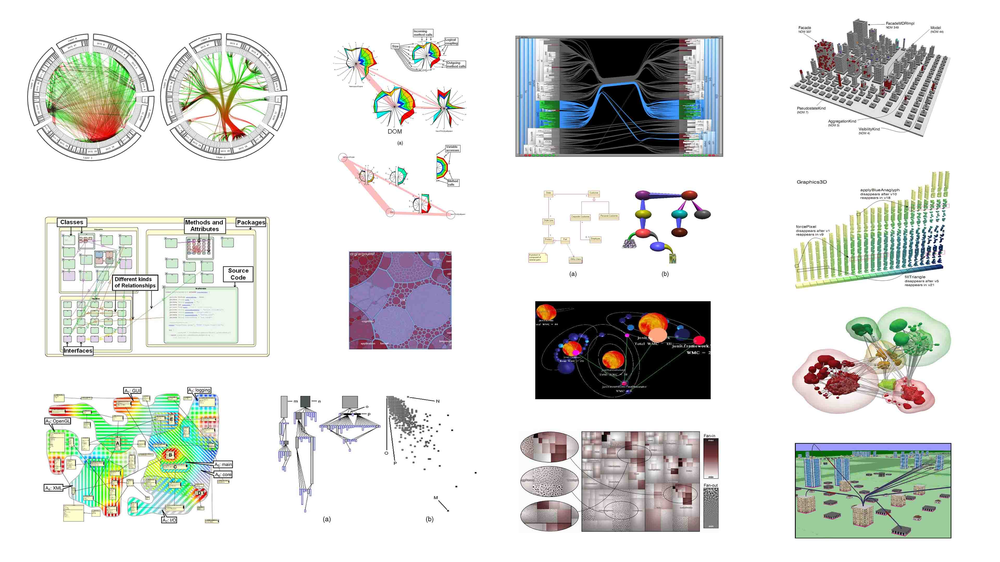
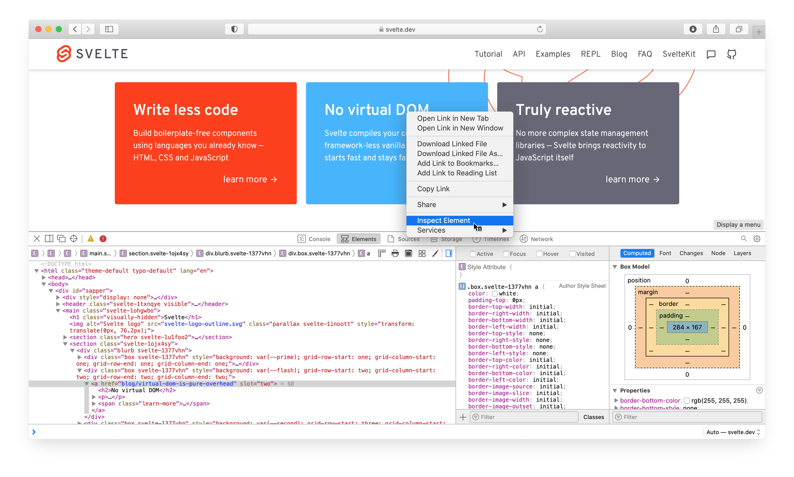
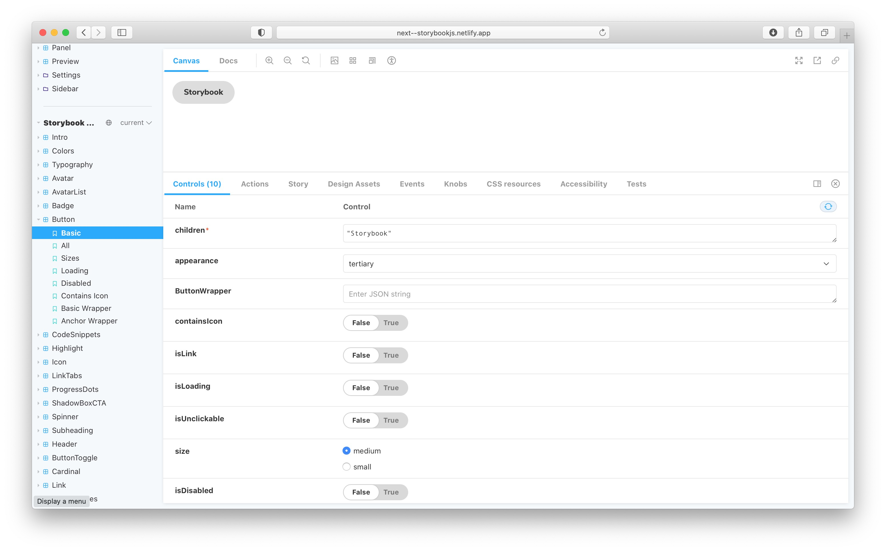

Documenting software has many different aspects. In this chapter we first cover literature touching research on 4 broader topics regarding software documentation:
Then we discuss some of the most recent research and zoom in on the specific topic of UI storyboards. And finally, in addition to the literature, an overview is given covering features and missing features of 4 related tools that are used in the industry:
The creation and maintenance of documentation is a hard and time-consuming task. A survey by Forward et al. 1 shows that its "participants agree that documentation tools should seek to better extract knowledge from core resources" like source code.
Various attempts have been made to use this knowledge for documentation purposes. Antoniol et al. 2 and Marcus et al. 3 discuss how to extract knowledge from source code to automatically couple snippets from free-text documents with their corresponding source code fragments.
Another technique is to generate documentation text completely using AI. Barone et al. 4 scrape Github to collect python functions and their corresponding documentation. This data can then be used to automatically convert code to a summarising text using a neural attention model as is shown by Iyer et al. 5
Other than textual documentation, there are lots of other visual techniques researchers have come up with over the last decennia. A survey published by Caserta et al. 6 in 2010 provides a good overview of graphical documentation techniques, both 2D- and 3D-based, representing the static aspects of the software and its evolution. It covers classical diagrams like those specified in UML as well as more special representations like city & solar system metaphor representations, Voronoi treemaps, etc. The survey categorizes them according to their characteristics and features.

Later on, in 2014, Shahin et al. 7 did another more systematic review of software architecture visualization techniques. They do not only summarize the different techniques found but also identify their purposes and report the level of evidence there is to support the quality of the used techniques. Two main points they make in their conclusion are that there is a general lack of controlled experiments to evaluate the visualizations and that it is more likely to gather and provide a higher level of evidence for (semi-)automatic visualization tools compared with techniques that need to be applied manually.
In a similar review, anno 2018, Merino et al. 8 reconfirm the lack of strong evaluations for software visualization techniques and call researchers in the field to collect evidence using controlled experiments on real-world open-source software systems that promote reproducibility and replicability.
Asenov discusses a novel open-source IDE called Envision in his doctoral thesis 9. It enables developers to use domain-specific visualizations that are directly and inseparably coupled to their corresponding code and are unified in the same IDE. The work contains multiple user studies which clearly show the benefits of these graphical visualizations for the understanding of, and interacting with code.
When working with larger codebases, documentation (especially graphical representations) can quickly become overcluttered and difficult to understand 10. Hence, creating static visualizations of code is often not sufficient and thus some kind of interaction is needed.
// TODO: Finding First Focus Points (Sillito 2006)
One can see a software code base as a big graph of interconnected nodes. Efficient navigation in graphs has been covered in various research papers. Pienta et al. 11 propose a graph sensemaking hierarchy that categorizes tools and techniques based on how to interact with large graph data and summarize and compare their strengths and weaknesses.
Erben et al. 10 discuss graph navigation techniques specially designed to navigate in codebases and propose new interactions for UML diagrams that are hierarchically layered. Similarly, KaitoroBase is a tool developed by Su et al. 12 that provides assistance in non-linear exploration and visualization of software architecture documents and shows how grouping individual elements reduce cognitive load on the users.
Hundreds of papers8 have been written with inventions and suggestions of new ways for visualizing software. But "in designing notations, the majority of effort is spent on semantics, with graphical conventions largely an afterthought. Typically, no design rationale, scientific or otherwise, is provided for visual representation choices. While SE has developed mature methods for evaluating and designing semantics, it lacks equivalent methods for visual syntax." 13
To counter this, T. Green laid out a foundation with his work on the Cognitive Dimensions of Notations 1415. Later on, Moody et al. refined his findings and used it to construct a more rigid framework toward a "Scientific Basis for Constructing Visual Notations in Software Engineering" 13 in which they "define a set of principles for designing cognitively effective visual notations: ones that are optimized for human communication and problem-solving. Together these form a design theory, called the Physics of Notations as it focuses on the physical (perceptual) properties of notations rather than their logical (semantic) properties. The principles were synthesized from theory and empirical evidence from a wide range of fields and rest on an explicit theory of how visual notations communicate." 13 This framework will be used further in this thesis together with the techniques for graph exploration from Pienta et al. 11 as a foundation to guide the design of our tool to explore component-based UI code.
The research papers that are probably the most closely related to this work are the ones on Doppio 16, DemoScript 17, and StoryDroid 18. Doppio is a tool to visualize the flow between GUI screens that happens during user interactions. Its main drawbacks are that its users need to manually execute every possible user interaction path to create a storyboard visualization of them. Chi further developed this idea and also created DemoScript 17 which allows developers to write down textual scripts to define UI interaction flows. But the same drawback is still that in addition to the fully written app, one also needs to write these scripts to generate a storyboard.
In that regard, Chen et al. 18 proposed some interesting new ways to overcome this barrier and automate the creation of storyboards. They discuss how stochastic GUI testing tools like STOAT 19 can automatically create activity transition graphs (ATGs) from which a storyboard can be generated. They go even further and show how their own tool StoryDroid is even better at the creation of ATGs using only static language analysis. In addition to the effectiveness of the ATG extraction, they also perform user studies to show the usefulness of such storyboards for information retrieval of small applications. For the graphical representation of bigger graphs, however, "STORYDROID needs to provide a better strategy to visualize it" 18.
When it comes to component-based UI software, web technology is probably the oldest and most proven one that is still being actively used nowadays. HTML and javascript have laid the foundation for countless component-based UI frameworks. Some of the most popular ones being built by leading companies in the industry: React (by facebook), Angular, Polymer, Lit (by Google). An enormous amount of other component-based frameworks followed: VueJS, Svelte, Ember, Ionic, etc.
That is why we will first cover two tools used in web development environments. The Web Inspector and Storybook.
After lots of iterations and different approaches to component-based web design, multiple platforms in the native application development environment began to adopt UI design practices from the web industry. Google created Jetpack Compose and Flutter with the Flutter inspector as a clear example of web tech heritage. Facebook introduced react native, a way to create native apps using mostly web technology. And most recently Apple shared its vision on the future of UI development with the announcement of SwiftUI: a framework including a domain-specific language (DSL) for creating component-based user interfaces.
So after discussing the web development tooling we shed some light on Storyboards in Xcode (part of the official tooling to create iOS apps). In addition to the developer tools, we discuss some popular modeling software used in the industry: Visual paradigm and Enterprise architect.
Finally, we provide an overview of these tools' strengths and weaknesses.
To find initial focus points in code, the web inspector is probably the most used one. It has many variants developed by browser vendors: firebug, WebKit web inspector, chrome dev tools, just to name a few. And they all have this common feature that enables us to click on any element of a web page and to inspect its source code.

This method can be used on any web application that runs in a compatible browser and does not require any additional (documentation) efforts of the developer.
Even though this is a powerful tool to trace back the source code of a visual element of your application, it has one major drawback. It needs the app to be fully running and brought into the correct state. For example, imagine a more complex stateful app that requires a network connection (to some database, etc.) and a login system and dynamic views based on previous interactions of the user. When you are looking for a visual component that might only seldomly appear in the application it can require you to manually perform a lot of steps to alter the state of your app until you can see the component you are looking for.
In that case, we see that there might be a need for some proper isolation to quickly debug specific views of an application.
That is where Storybook 20 comes into play: Storybook is a tool for developing UI components in isolation. It simplifies building, documenting, and testing UIs.

So storybooks solve the component isolation problem. They help to generate demo pages to show the visual representation of UI components and let you change properties in isolation to see how they affect this representation. Apart from that, it assembles all the individual components and allows you to produce one single documentation asset containing all your UI components.
In fact, it is a very useful tool to document UI libraries but some problems remain. Firstly, in addition to developing the actual component, it requires you to manually write story definitions for every single one of your components you want to include in your storybook. And secondly, although there is a text search function, the components are listed in a linear way (i.e. a long list). When working on big projects this becomes a problem.
TODO